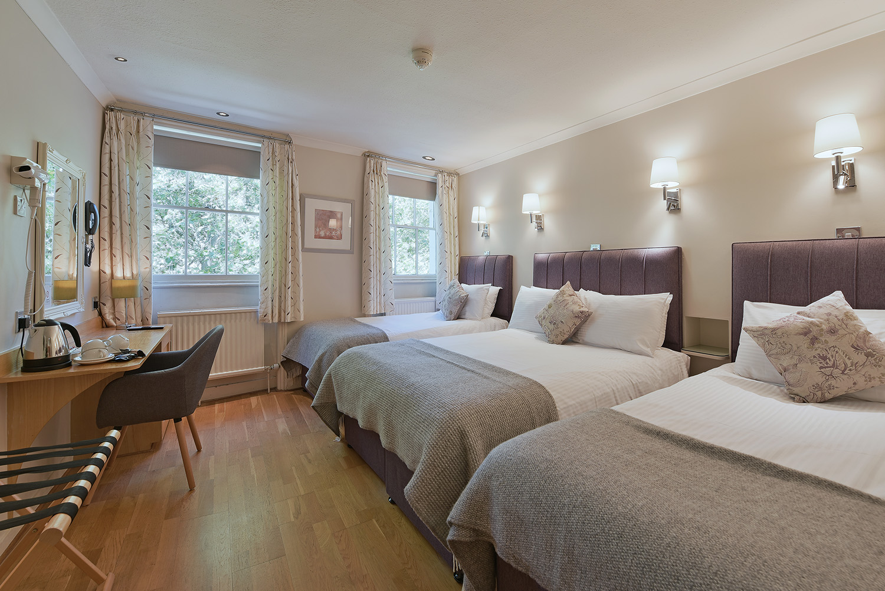

Perfecta para parejas que buscan una escapada íntima. Esta habitación ofrece una vista espectacular al mar y está equipada con una cama king-size, bañera de hidromasaje privada, y un balcón donde podrán disfrutar de románticos atardeceres. El ambiente cálido y acogedor está diseñado para crear momentos inolvidables con tu ser querido.
Ideal para familias que desean disfrutar de tiempo de calidad juntos. Esta amplia habitación cuenta con dos camas queen-size, una zona de estar cómoda, y un balcón con vista al jardín. Está equipada con todas las comodidades modernas, como TV de pantalla plana, mini bar y un espacioso baño con bañera. Un lugar perfecto para relajarse y disfrutar en familia.
Para quienes buscan el máximo confort y lujo, esta suite ofrece una experiencia excepcional. Incluye una cama king-size, sala de estar independiente, y un baño de lujo con una bañera de hidromasaje. La suite también cuenta con una terraza privada con vistas panorámicas al océano, perfecta para relajarse y desconectar del mundo.
Perfecta para amigos o parejas que prefieren dormir en camas separadas. Esta habitación está equipada con dos camas individuales, un baño moderno con ducha, y un pequeño balcón con vista al jardín. Es ideal para una estancia cómoda y sin complicaciones, con todas las facilidades necesarias a su disposición.
Diseñada para aquellos que viajan por negocios pero no quieren renunciar al confort. Esta habitación cuenta con una cama queen-size, un escritorio amplio con silla ergonómica, y Wi-Fi de alta velocidad. Además, ofrece un baño con ducha de lluvia y todas las comodidades modernas para asegurar una estancia productiva y relajante.
 ¿Más información?
¿Más información?